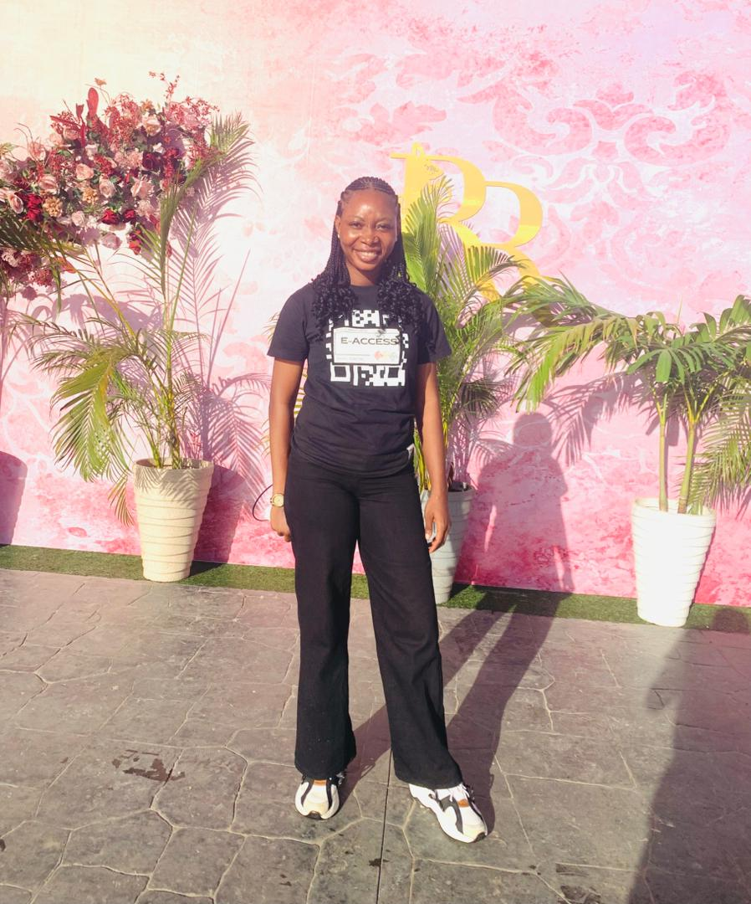
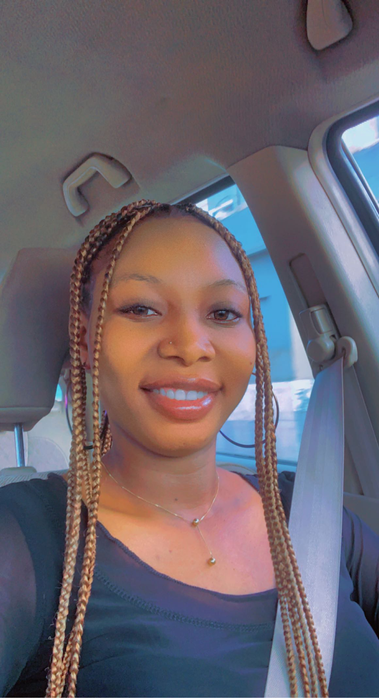
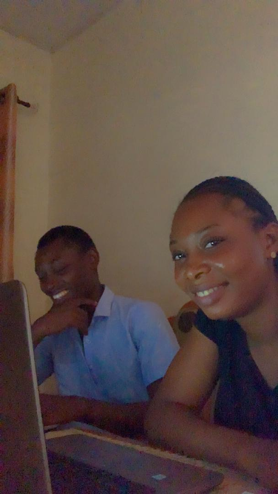
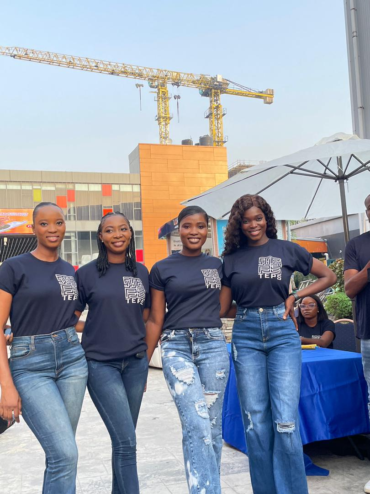
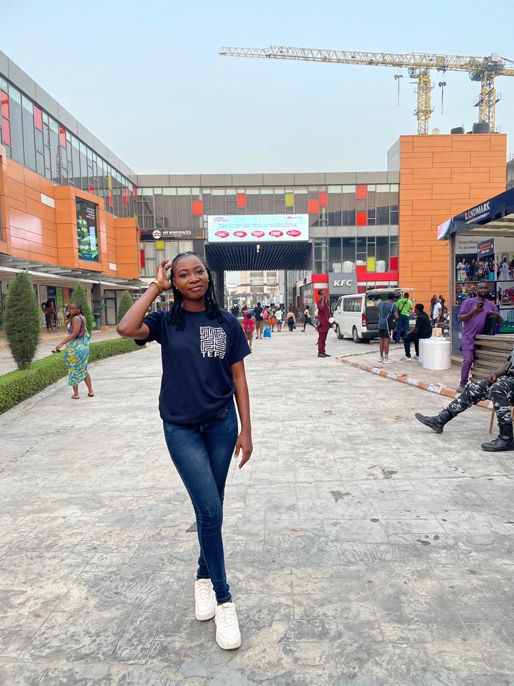

Mistura Ishola
Aspiring Front-End Developer | HTML • CSS • JavaScript • React
Ikeja, Lagos State | Misturaaaishola@gmail.com | +234 808 120 2521
Career Objective
To secure a gainful employment in an organization that recognizes and encourages the development and realization of human potential to achieve corporate goals. Dedicated to making a positive impact and adding value to organizational success.
Education
- HND in Computer Science – Kwara State Polytechnic, Ilorin (2021)
- ND in Computer Science – Kwara State Polytechnic, Ilorin (2017)
- SSCE – Lagos State Model College Kankon, Badagry (2014)
- FSLC – Model Nursery and Primary School, Ojota, Lagos (2008)
Certifications
- Chartered Institute of Human Resources Management (CIHRM) – 2023
- Chartered Institute of Environmental Health and Safety (CIEHS) – 2023
- Sustainable Development Goals (SDG) – Certificate of Recognition – 2023
Work Experience
NYSC – Administrative Assistant (INEC Ogun State, 2022–2023)
- Coordinated sensitization and voter education workshops
- Conducted surveys to identify program improvements
- Delivered presentations to stakeholders
- Distributed PVCs to voters
Phbeamo Event Consultants – Event Coordinator (2021–Present)
- Supported and managed events of varying sizes
- Handled guest communication, logistics, and promotion
- Coordinated vendors and volunteers
- Ensured seamless event operations and troubleshooting
Technical Skills
- HTML
- CSS
- JavaScript
- React.js
Other Skills
- Proficient in Microsoft Word, Excel, and PowerPoint
- Strong communication and interpersonal skills
- Adaptable and quick learner
- Team collaboration and CRM
Interests
- Reading
- Listening to music
- Traveling
- Playing games (Volleyball, Chess, Scrabble)
Photos





